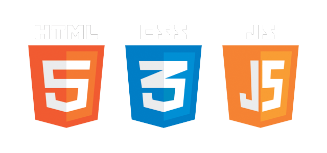
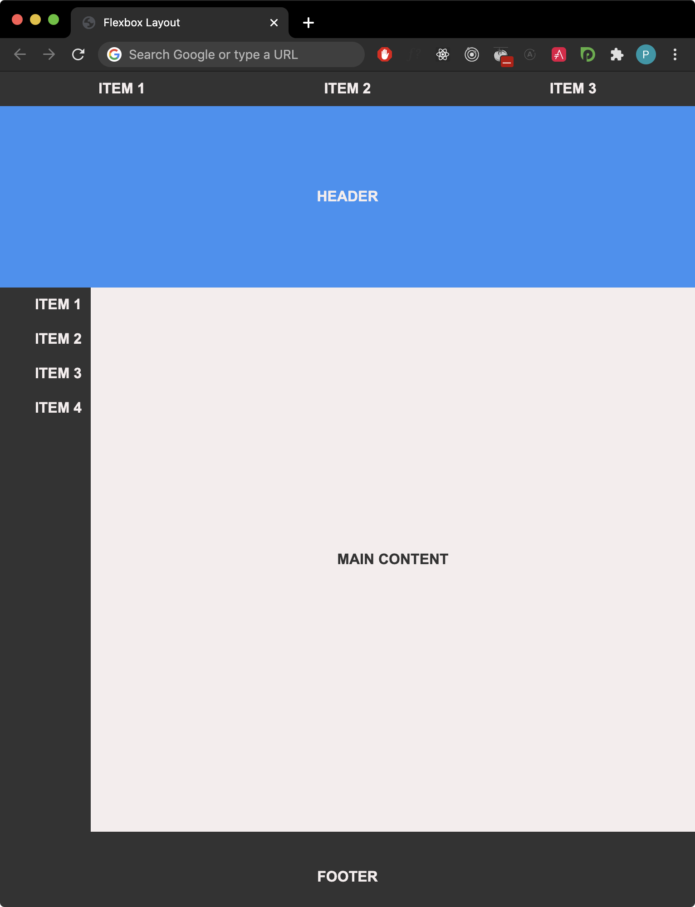
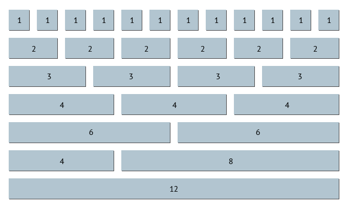

System developed for information sharing across internationally dispersed teams, originally aimed at the High Energy Physics community
Stores documents and other web resources, interlinked with each other and accessed via the Internet
In 1989, Tim Berners Lee invented the three fundamental technologies that are the foundation of the WWW
Not only that, he wrote the first web browser and first web server
After that, he created and still leads the World Wide Web Consortium (W3C)
A pointer to a resource on the World Wide Web. Can be something as simple as a file or a directory, or a reference to a more complicated object, such as a query to a database or to a search engine
A Web HTML document can contain a number of URLs, pointing to other Web resources (links)

HTTP is a stateless, application-layer protocol for communicating between distributed systems and is the foundation of the modern web. Communication between a host and a client occurs via a request/response pair. The client initiates an HTTP request message, which is serviced through an HTTP response message in return.
HTTP verbs define the action to perform on a specific web resource
The most popular verbs are:

With URLs and verbs, the client can initiate requests to the server. In return, the server responds with status codes and message payloads. The status code is important and tells the client how to interpret the server response

// Dump to screen the contents of the index page at www.google.com
$ curl http://www.google.com
// Create a mirror image of GNU WWW site (same directory structure the original has)
// with only one try per document, saving the log of the activities to a log file
$ wget -r -t1 http://www.gnu.com -o mirror.log
Immutable object representing an abstraction of a Uniform Resource Locator
Comes with the capability of retrieving the URL contents and support for proxy servers and multiple protocols, making use of the Strategy design pattern
java.net.URLConnection and its subclasses provide advanced features and control. They provide a way to use sockets in your code without having to know any of the underlying socket details
Built into Google Chrome, they provide web developers with deep access to the internals of the browser and web applications
Firebug extension provides similar functionality for FirefoxCreated by <Academia de Código_>
The part of the Web that we can see and interact with

The most basic building block of the Web.
Made up of elements that may be used to:

HTML Elements consist of
Elements may be nested within other elements.
Element tags need to be closed in the same order they were opened.
<a>Hello, <strong>world</strong>!</a>
<a>Hello, <strong>world</a>!</strong>
Some HTML elements can use a self-closing tag syntax
 here, the forward slash / at the end is optional
here, the forward slash / at the end is optional
<!-- This is an HTML comment -->
<!DOCTYPE html>
<html>
<head>
<meta charset="utf-8">
<title>My Special Webpage</title>
<script src="/index.js"></script>
</head>
<body>
<h1>Hello, <strong>World</strong>!</h1>
</body>
</html>
HTML Hello World
In HTML, the characters <, >,",' and & are special characters. They are part of the HTML syntax itself and should not appear as content
Special codes exist that represent these characters and can be used in these circumstances:

HTML elements are organized hierarchically on a document tree, and subsequently rendered on screen by the browser

Each element in the HTML document is represented as a rectangular box, with the box's content, padding, border, and margin built up around one another
 Each of these box properties can be manipulated for adjusting their format
and layout on screen
Each of these box properties can be manipulated for adjusting their format
and layout on screen
We can visualize the boxes associated with each HTML element on the Chrome Dev Tools

Two important categories of elements in HTML exist:
Blocks are formatted vertically one after the other. Inlines are formatted horizontally
Built into Google Chrome, they provide web developers with deep access to the internals of the browser and web applications
Firebug extension provides similar functionality for Firefox
One of the most important elements in a web document is... text.
But a title is different from a sub-title or a paragraph, right?HTML provides block elements for paragraphs and headings of different weights.
<h1>, <h2>, <h3>,
<h4>, <h5>, <h6>
to represent headings of different weights
(<h1> is the biggest!)
<p> to represent a text
paragraph
Paragraph 1 text
some more text
Paragraph 2 text
some more text
<p>
Paragraph 1 text
some more text
</p>
<hr>
<p>
Paragraph 2 text
some more text
</p>
code
<img src="/images/myimage.jpg" alt="my image"/>
<img src="http://www.academiadecodigo.com/images/myimage.jpg" alt="my image"/>
Unordered
<ul> lists are used to represent
lists of items without a particular order
Ordered
<ol> lists are used to represent
lists of ordered items
Wrap each item inside a
List Item element
<li>
<ul>
<li>C</li>
<li>C++</li>
<li>Java</li>
<li>JavaScript</li>
</ul>
<ol>
<li>Get Up</li>
<li>Code</li>
<li>Sleep</li>
</ol>
<table>
<tr>
<th>First Header</th>
<th>Second Header</th>
<th>Third Header</th>
</tr>
<tr>
<td>First Cell</td>
<td>Second Cell</td>
<td>Third Cell</td>
</tr>
</table>
| First Header | Second Header | Third Header |
|---|---|---|
| First Cell | Second Cell | Third Cell |
As the name implies, it represents a clickable button.
JavaScript may be used to describe what should happen on user interaction -- but we'll keep that for later.
<button>Click Me!<button>
One of the most fundamental features of the Web.
Allow us to link our documents to any other resource (more documents, images, videos, audio, etc..)
An URL uniquely identifies a resource on the web.
http://www.academiadecodigo.org/
file:///Users/ac/dev/1-frontend-web/1-text/index.html
images/help.png
/robots.txt
<a>.
href attribute to specify
the target URL.
target="_self" opens the document
in the same tab (default).
target="_blank" opens the document
in a new tab.
<a href="www.academiadecodigo.org" target="_blank">Apply Now!</a>
<a href="checkout.html">Proceed to checkout!</a>
<a href="www.academiadecodigo.org" target="_blank">
<img src="/images/myimage.jpg" alt="my image"/>
</a>
Besides describing the document's content (text, images, etc), HTML provides block elements to define its structure.
Despite the fact pages may be more or less complex, they usually share a list of common sections -- structurally speaking.

You may use CSS visually layout the individual elements to form sections, but the visuals alone won't allow other programs to infer the purpose of certain elements.
Assistive technologies rely on these semantics to provide other means of interacting with the page.
HTML provides multiple elements to mark up sections of content based on their purpose.
<header>
<nav><main>
<article>
<section>
<aside>
<footer>
HTML includes a lot more elements (most of them introduced in version 5) to represent different types of content:
Check them all at MDN HTML Element ReferenceCreate an index.html file and a resources folder
Add HTML elements of your choice to the web document
Don't forget to use semantic elements to structure the page
Allows the structure of a web page to be separated from its presentation and styling
Specifies how documents are styled, laid out and presented
Web browsers apply CSS rules to HTML elements to affect how they are displayed
You've already seen some styling being implemented:
You may extend browser default styles using CSS rules.
Rules specify a set of styles to be applied to a group of elements.
A rule looks like this:
h1 {
color: red;
font-size: 12px;
}
h1 is the
selector: targets a group
of elements
property:value pairs
The <link> element links a web
document to an external resource.
It may be used to apply CSS rules defined in a CSS file.
<html>
<head>
<link rel="stylesheet" href="styles.css">
<link rel="stylesheet" href="more-styles.css">
</head>
<body>
</body>
</html>
rel describes the relationship
between the web document and the resource
href specifies the resource's
URL
Styling elements based on their names is limiting. What if we wanted to have two paragraphs of different colors?
Classes to the rescue!
class attribute.
.className syntax.
<p class="error" >I am an error.<p>
<p class="success">Success!<p>
<h1 class="big success">VERY SUCCESSFUL!<h1>
<p>I'm just a paragraph.<p>.error {
color: red;
}
.success {
color: blue;
}
.big {
font-size: 50px;
}
Selectors are also able to target
HTML elements by their id attribute.
id attribute values should be unique
across all document.
<p id="special-secret">I don't want to be seen.<p>#special-secret {
opacity: 0;
}Explore classes and IDs
It's possible to combine selectors using combinators, which allows:
/* this is a CSS comment by the way */
/* all paragraphs and all elements with class "success" will be blue */
p, .success {
color: blue;
}
/* all paragraphs with the "warning" class will be red */
p.warning {
color: red;
}
/* all elements with "blue" class that are descendents of an element with "bright" class with be lightblue */
.bright .blue {
color: lightblue;
}
/* all sections nested inside an element with id "main-area" will have a border */
#main-area > section {
border: 2px solid blue;
}Get comfortable with selectors with this CSS Selector Tutorial.
You can use CSS Selectors Reference for extensive documentation.
There are three core concepts in CSS that define which styles get applied to an element.
To truly master CSS, we need to understand these three concepts!
Cascading is a core concept in CSS.
Stylesheets cascade. The order of the rules matter: the last one will have precedence over previous ones.
If a document is linked to multiple stylesheets, the last ones will have precedence over the previous ones.
h1 {
font-size: 10px;
}
h1 {
font-size: 12px;
}<h1> font-size will be
12px!
Another core concept in CSS.
Defines which styles will be applied in case of conflicting rules.
Specificity states that more specific selectors will have precedence over broader ones.
img {
border-radius: 0px;
}
.round-corners {
border-radius: 10px;
}
#ball {
border-radius: 100%;
}border-radius of
<img id="ball"
class="round-corners"/>?
There are two kinds of properties:
Children elements inherit parent's inherited properties.
header {
text-align: center;
color: blue;
border: 1px solid red;
}
<header>
<h1>I'll be cool and centered</h1>
<h4>So am I</h4>
<p>Me too!</p>
</header>
Use Chrome DevTools to debug styles being to elements.
HTML elements wrap content inside a box.
Web browsers render content and its box using a set of rules called CSS Box Model.
With CSS, it's possible to define how the content is positioned inside its own box and how all boxes are layed out in the document.
Specification that defines how element boxes are rendered
width and
height properties.
padding related
properties.
border related properties.
margin related properties
CSS broadly defines two types of boxes.
They mostly differ in how they handle parent's available space.
The display property defines which kind
of box surrounds the content.
Break onto a new line, stacking on top of each other.
Fill available parent space (in the writing direction) by default.
Respect width and
height properties.
If width is not defined, they are as
wide as their parent.
Paddings, margins and borders push other elements away.

Do not break onto a new line.
Width and
height properties do not apply.
Element size is always the sum of content size, padding, border width and margin.
Horizontal paddings push other inline elements away.
There's a special kind of box that is something in-between.
It's like an inline box but
width and height may be
set.
If undefined, box size will be the same as an inline box.
display: inline-block;HTML provides two generic elements for content wrapping.
These elements hold
no semantic meaning, unlike
<article>,
<section> or
<h1>.
<div> to wrap content in a
block box
<span> to wrap content in an
inline box
Experiments with box model properties
So, everything in CSS is a box, right?
What happens if there is too much content to fit in the box?
Overflow
By default, CSS tries to avoid hiding data.
If the box is not big enough, content will overflow the box limits.
<div class="slim">
<p>hellooooooooooooooo world!</p>
</div>
<div class="short">
<p>hello</p>
<p>...</p>
<p>...</p>
<p>...</p>
<p>world!</p>
</div>.slim {
width: 15px;
}
.short {
height: 20px;
}overflow propertyAllows changing how browser handles overflowing content.
It's possible to hide overflowing content completely, or enable scrollbars to scroll through.
.slim {
width: 15px;
overflow: hidden;
}
.short {
height: 20px;
overflow: scroll;
}Experiments with overflow property
Create a visual representation of the CSS Box Model using HTML and CSS.
HTML lays out elements using the rules of block and inline boxes.
A well structured HTML document is very important, but the normal flow is not sufficient for complex layouts.
CSS provides a set of tools to change how the browser positions elements on the document.
display property
As we've seen before, the
display property is able to change the
type of the element's box.
display: block;
display: inline;
display: inline-block;
Explore basic document flow and display property.
display property superpowers
display property also provides two
possible values that change how child elements are
layed out.
These are extremely useful when creating complex layouts.
Although children's rendering flow is changed, the element itself is treated as a block.
display: flex;
display: grid;Easily lays out elements in a single dimension (row or column).

<div class="parent">
<div class="child">one</div>
<div class="important child">two</div>
<div class="child">three</div>
</div>
.parent {
outline: 1px solid blue;
display: flex;
}
.child {
outline: 1px dotted red;
}Flexbox provides extra properties to tune how children are layed out.
.parent {
flex-direction: column;
justify-content: stretch; /* changes main axis flow */
align-items: center; /* changes cross axis flow */
}
Flex container children may define
how much available space they fill in the main axis
through the flex property.
The value may be any positive number and represents a relative size.
.child {
flex: 1;
outline: 1px solid red;
}
.important {
flex: 2;
}Flexbox Flow
Page layout with Flexbox
<nav class="navbar">
<ul>
<li>ITEM 1</li>
<li>ITEM 2</li>
<li>ITEM 3</li>
</ul>
</nav>
<header>HEADER</header>
<main>
<aside>
<nav class="sidebar">
<ul>
<li>ITEM 1</li>
<li>ITEM 2</li>
<li>ITEM 3</li>
<li>ITEM 4</li>
</ul>
</nav>
</aside>
<div class="main-content">MAIN CONTENT</div>
</main>
<footer>FOOTER</footer>
.navbar {
height: 40px;
}
header {
height: 200px;
}
.main-content {
height: 200px;
}
.sidebar {
width: 100px;
}
footer {
height: 100px;
}Positioning allows moving an element from where it would be placed in normal document flow.
Suited for managing and fine-tuning a specific element's position.
There are 5 types of positioning:
position property
Element positioning is static by
default, but may be changed through the
position property.
position: static; /* default value */
position: relative;
position: absolute;
position: fixed;
position: sticky;
The element is positioned where it should be in the document flow.
.parent {
border: 2px black dotted;
display: inline-block;
}
.box {
display: inline-block;
background: red;
width: 100px;
height: 100px;
}
#two {
background: green;
}<div class="parent">
<div class="box" id="one">One</div>
<div class="box" id="two">Two</div>
<div class="box" id="three">Three</div>
<div class="box" id="four">Four</div>
</div>
Allows offseting an element position.
This may be done with top,
left, right and
bottom properties.
#two {
top: 20px;
left: 20px;
background: green;
position: relative;
}Removes an element from the document flow.
Element is positioned relatively to the nearest positioned parent.
.parent {
border: 2px black dotted;
display: inline-block;
position: relative;
}
#two {
top: 20px;
left: 20px;
background: green;
position: absolute;
}Removes an element from the document flow.
Element is positioned relatively to the viewport, which makes it look fixed in place.
#two {
top: 20px;
left: 20px;
background: green;
position: fixed;
}Statically positioned item until scrolled to the desired viewport offset.
Once it hits the desired offset, it will act as a fixed position element.
Older browsers do not support this value.
#two {
top: 20px;
left: 20px;
background: green;
position: sticky;
}Positioning elements!
Update your Flexbox Layout page to have a fixed navigation bar and a sticky sidebar!
#main-content {
height: 2000px;
}Extensive catalog of open source designer web fonts
Add a stylesheet link to request the desired web fonts
<link rel="stylesheet" href="https://fonts.googleapis.com/css?family=Tangerine">
p {
font-family: 'Tangerine', serif;
font-size: 48px;
text-shadow: 4px 4px 4px #aaa;
}
Scalable vector icons using a single font and css
The font awesome css can be loaded using a cdn link
<link href="http://maxcdn.bootstrapcdn.com/font-awesome/4.2.0/css/font-awesome.min.css" rel="stylesheet" type="text/css">
Insert icons easily with the i element
<!-- github icon -->
<i class="fa fa-github"></i>

The MDN is the official website for development documentation of web standards, explore it to take full advantage of the web's capabilities

The advent of the web has brought browsers to an ever-growing number of devices with different screen sizes.
This brought up a question to developers and designers everywhere...
How can my web site look good on them all?
A set of practices that allows web pages to alter their layout and appearance to suit different screen sizes.
Initially based on complex legacy CSS layout techniques and media queries.
CSS has since evolved, providing tools to develop responsively easily.
Flexbox is one of those tools! Did you notice how responsive your Flexbox Layout was?Available around 2010, it's one of the most important CSS features to truly allow Responsive Web Design.
Media Queries allow developers to apply different CSS styles depending on viewing device's screen characteristics.
@media screen and (min-width: 800px) {
/* these styles will only be applied if it's a screen that's at least 800px wide */
.container {
margin: 1em 2em;
}
}Web is being increasily accessed through mobile devices.
Developers have found it's easier to develop a web page targeting small screens, and then use media queries to make it look good on bigger ones.
Mobile First Development with Chrome DevTools!
CSS allows usage of relative values in most size-related properties.
width and
height.
font-size. useful for relative font
sizes.
font-size. useful for relative font
sizes.
Relative font sizes


The most popular front-end framework
Bootstrap can be downloaded from their website getbootstrap.com,
or alternatively used via a CDN:
<script src="https://code.jquery.com/jquery-latest.js"></script>
<link rel="stylesheet"
href="https://maxcdn.bootstrapcdn.com/bootstrap/3.3.7/css/bootstrap.min.css">
<script src="https://maxcdn.bootstrapcdn.com/bootstrap/3.3.7/js/bootstrap.min.js">
</script>
<meta name="viewport" content="width=device-width, initial-scale=1.0">
Bootstrap requires a containing element to wrap the site contents
Two types of containers are available
<div class="container">
</div>
<div class="container-fluid">
</div>
Is a responsive mobile-first grid system that scales up to 12 columns as the viewport size increases
 Content can span a different number of columnsScreen sizes are divided into 4 types with different css prefixes
<div class="container-fluid">
<div class="row">
<div class="col-sm-6 col-lg-4">
</div>
<div class="col-sm-6 col-lg-4">
</div>
<div class="col-sm-6 col-lg-4">
</div>
</div>
</div>
<div class="container-fluid">
<div class="row">
<div class="hidden-xs">hide this on phones</div>
<div class="visible-lg">show this on large desktops</div>
</div>
</div>
By default, Bootstrap offers great looking fonts and size ratios of headers and paragraphs

Bootstrap provides various table styles and functionalities
Bootstrap delivers various form control styles, layout features and custom made components for setting up a variety of forms
Many reusable components are available, proving iconography, dropdowns, input groups, navigation, alerts and much more

Learn CSS Grid with Grid Garden.